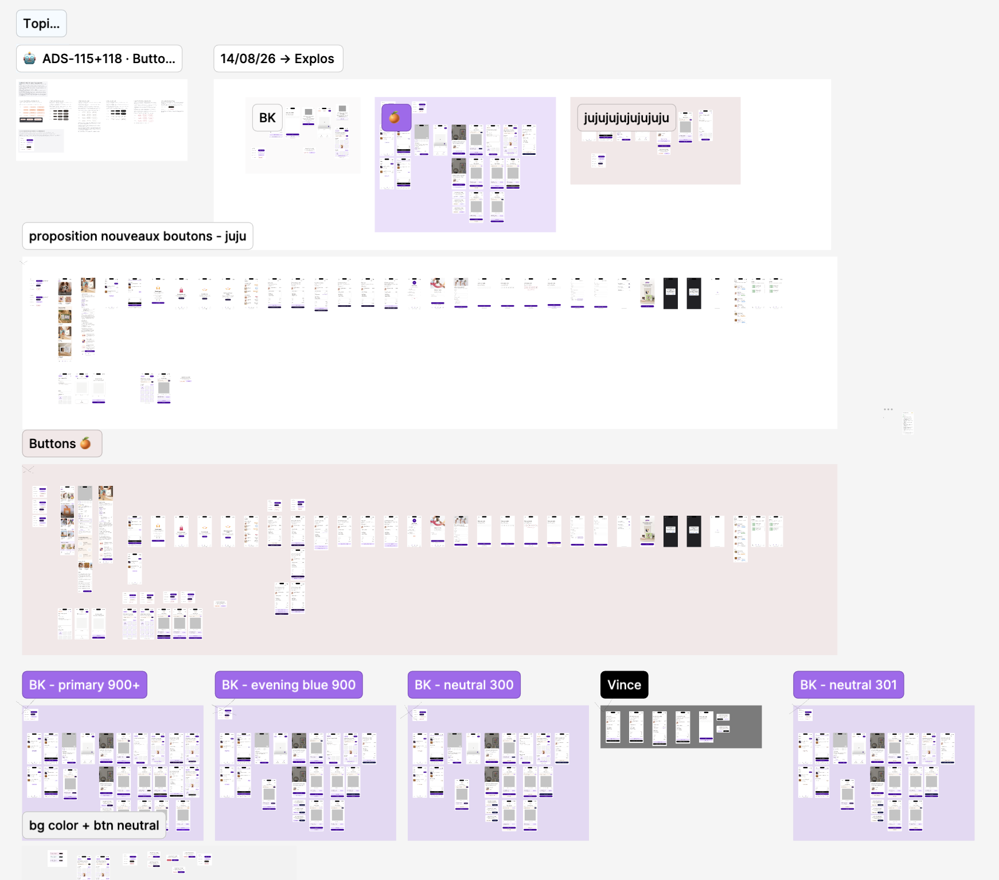
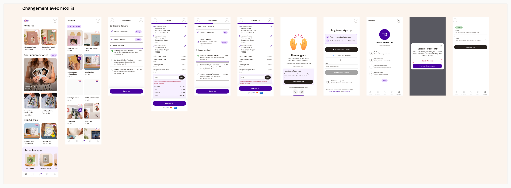
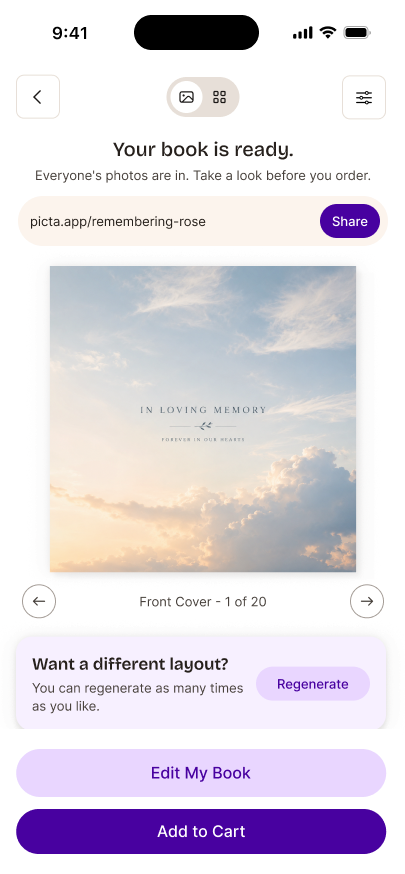
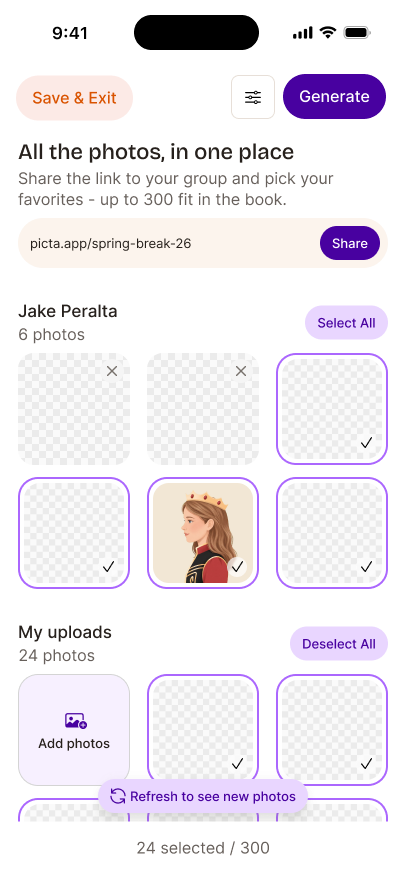
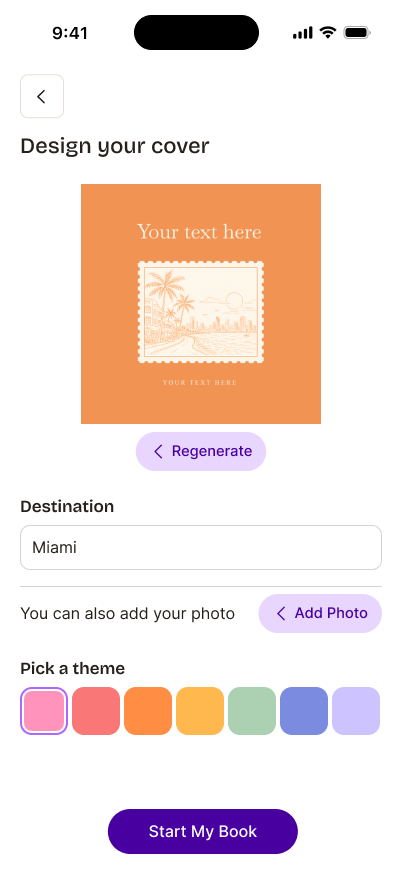
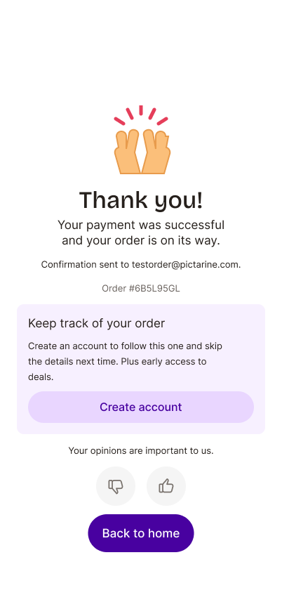

Rethinking the button hierarchy
Where we're going, and how we got here.
The directions the team explored.
- Each designer explored their own proposals on real app screens.
- Reviewed together in DS Office Hours on 14 and 21 August.

The team voted unanimously to add a black neutral.
Black was seen as the most flexible option.
Hierarchy is about function first, colour second.
Source: Nielsen Norman Group, Button States: Communicate Interaction
Open points: black draws a lot of attention, so it's an exception (e.g. a standalone action), not a default. Next step: map real screens with competing buttons before deciding.

A large black secondary doesn't work.
- Too many large black buttons across the app.
- Black competes with the primary: e.g. the two can't sit together in a modal.
- The rules and hierarchy of the system have to hold.
So the next question was whether black could work as the tertiary.
Black as tertiary turns the hierarchy upside down.
Visual weight
Black carries far more weight than the light purple secondary, so the "least prominent" button would stand out the most.
Exceptions
Keeping it only for small sizes would need so many exceptions that the redesign loses its point.
A grey outline secondary. A text-only tertiary.
It follows the benchmark
12 of 16 systems use an outline secondary, and 13 of 16 a text-only tertiary. It's the standard way to build buttons, and the one that reinvents the wheel the least.
It stays clear of our selectors
A purple outline looks like the selectors we use throughout the editor. A neutral grey interferes the least with the rest of the system.
It lightens dense screens
Text-only is the lightest tertiary, so busy screens breathe.
Every system steps down in weight.
Etsy, Nike, Vercel, Shopify, eBay, Decathlon, Airbnb, Uber, Pinterest, Stripe, Alibaba, Skyscanner, IKEA, Duolingo, Rakuten, Mailchimp. Scroll the image for every system.

Outlines are neutral by default.
Black border
Etsy, Airbnb, IKEA. All three have black primaries.
Light grey border, dark label
Nike, Vercel, Shopify, Stripe, Alibaba, and eBay's tertiary.
Grey border, brand label
Decathlon, Duolingo.
Brand border and label
eBay's secondary, Rakuten.
Neutral is the default10 of the 12 outline secondaries have a neutral border (black or grey). Only eBay and Rakuten use a full brand-colour outline.
Black only next to blackBlack borders only appear next to black primaries. In brand-colour sets, the neutral outline is always light grey.
Grey sits below brandWhere a set has both a brand-colour outline and a grey outline, grey is the lower tier. eBay is the only example.
Five outlines tested. Grey is the one that fits.
Black outline
- Crisp and neutral, strong contrast (17.5:1)
- Heavy: brings back the weight of black we just ruled out
- In the benchmark, black outlines only sit next to black primaries
Grey outline
- The neutral outline brand-colour systems use
- Clearly different from the purple primary
- Label stays fully legible (17.9:1)
Dark purple outline
- On brand
- Looks like a selected selector
- Two purple buttons compete side by side
Mid purple outline
- On brand, softer than the dark purple
- Label stays legible (11.8:1)
- Same purple as our selected photos and selectors
Light purple outline
- On brand and soft
- Border nearly invisible (1.35:1)
- Reads as a disabled button
The lightest tertiary, and the most common one.
The most common pattern
13 of 16 benchmarked systems use a text-only tertiary.
It lightens dense screens
No shape and no fill, so it never competes with the primary or the secondary.
What we tried, and why we moved on.
- The soft fill tertiary looks heavier than the outline secondary
- The purple outline looks like our selectors
- An outline tertiary is rare (1 of 16 benchmarked systems)
- The purple outline looks like our selectors
Black as secondary and black as tertiary were ruled out earlier: too much visual weight.
The same screens, with the new hierarchy.




The same screens, with the new hierarchy.




"The outline looks like a wireframe."
- Users are used to outline buttons: 12 of 16 benchmarked systems use one.
- In those systems, outlines rarely sit on non-white backgrounds.
- Our users don't know what a wireframe is.
Buttons don't need to bring the warmth.
The problem started when we used pink and orange buttons to add warmth, and over time we've seen how much that didn't work.
Buttons will be strong and functional. The warmth comes from colour, illustrations, background colours, photography and images, not from the buttons.
"Shouldn't text-only buttons be underlined?"
- Underlines help accessibility, and we've noted that.
- But an underline adds visual clutter and competes with the hierarchy.
- Since iOS 7, users are used to text buttons without underlines.
- Instead, the label uses Callout/Strong: the bold weight sets it apart from body text, which keeps us somewhat compliant without an underline.
Direction: no underline, bold label (Callout/Strong).
The editor and special components have their own rules.
Floating Regenerate
It behaves like a toast, so it needs its own component, not a standard button.
Crop and dense editors
Too interaction-dense to fit the standard button rules.
"Exception connue" board
Tracks local components so we can decide later whether to add them to the system.
Every designer will need to revisit their screens.
- Progressively, with no urgency.
- About 30 to 60 minutes per designer per week, during design system hours.
- Validate the grey outline secondary and text-only tertiary together
- Build the variants in the library
- Share with the devs
- Retrofit screens progressively during design system hours
Development timeline: unknown for now. We don't yet know who the new dev referents for the design system are, so we can't say when this will be built.
A grey outline secondary. A text-only tertiary.
Thank you.
Questions and feedback welcome, here or on the ADS-115 ticket.